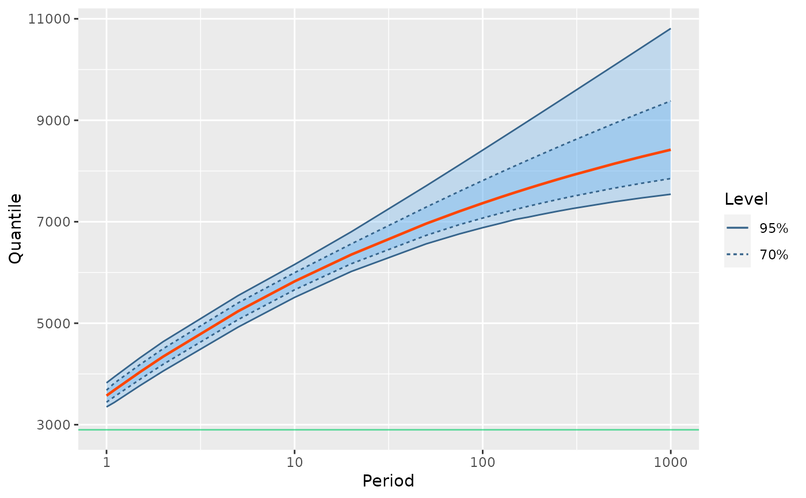

Compute return levels along with confidence bounds for a Poisson-GP model with ML inference results.
Arguments
- object
An object with class
"poisGP"representing the inference results for a Poisson-GP model.- period
A vector of periods for which the return levels will be computed. By default "round" periods covering the range from
1to1000are chosen.- level
Level of confidence. Can be a vector.
- confintMethod
The method used to compute the confidence intervals. The value
"proflik"corresponds to the profile-likelihood. The value"delta"corresponds to the delta method and the value"none"can be used to obtain the return levels without confidence limits on them.- out
The type of outpout wanted, see the Value section.
- trace
Integer level of verbosity. The default value is
0, but whenconfintMethodis"proflik", it is a good practice to usetrace = 1, so this may change in the future.- check
Logical If.
FALSEthe results are intended to be used for a return-level plot, while the valueTRUEproduce results for a graphical check of the computations.- nCheck
Number of points on a profile-likelihood curve for each value \(T\) of the return period when
checkisTRUE. These points are taken in an interval containing the ML estimate \(\hat{\rho}(T)\) of the return level \(\rho(T)\), with a range controled bynSigma.- nSigma
Range the of the return levels used to build the curve when
checkisTRUE. Vector of length two with its values \(n_1\) and \(n_2\) defining the range for the values of \(\rho(T)\) from \(\hat{\rho}(T) - n_1 s(T)\) to \(\hat{\rho}(T) + n_2 s(T)\) where \(s(T)\) is the estimated standard deviation for \(\hat{\rho}(T)\). The default choice usually covers the profile-likelihood interval for all periods. A vector of length one is recycled.- ftol_abs, ftol_rel
Absolute and relative tolerance to stop the constrained optimisation
nloptr. These apply to the objective of the constrained optimisation, which is here the return level as a function of the Poisson-GP parameter vector. The smallest possible values reaching convergence should be chosen. By increasing either of thes values the convergence will be easier to get but the results may not be as precise as wanted. This can/should be checked by usingcheck = TRUEand a subsequent call toautoplot.- ...
Not used yet.
Value
When check is FALSE (default), an object of
class "RL.poisGP" inheriting either from
data.frame. It can also be a simple array containing
the results. In the first case, the object can be used with the
autoplot method to produce the return level plot
without recomputing the results.
When check is TRUE the result is an object with
class RLCheck.poisGP and can be used with autoplot
to build a graphical check of the results of the
profile-likelihood method. This is a list containing two data
frames: RL contains the confidence limits and estimates,
while negLogLik contains a grid of values for the the
return level \(\rho(T)\) along with the corresponding
values of the profile negative log-likelihood. This allows to plot
the curve.
Details
The return-level curve corresponding to the column or to the
dimension named "Quant" is obtained by plugging the ML
estimate of the Poisson-GP parameters in the quantile. The
confidence limits can be obtained by profile-likelihood or by the
standard 'delta' method.
Note
The check for check = TRUE is built by computing the
value of the profile-likelihood for each period \(T\) and each
candidate value of \(\rho(T)\). This is done by using a
two-parameter optimisation: maximise on the vector \([\lambda,
\, \xi]\) of the Poisson rate \(\lambda\) and the
and GP shape \(\xi\), the return level \(\rho(T)\)
being fixed. This optimisation can fail to converge, in which case
the result is NA. For now a derivative-free optimisation is
used (COBYLA): the computations can be quite long.
See also
poisGP for an example
autoplot.RLCheck.poisGP. The confint method
has a similar check possibility, see
confint.poisGP.
Examples
## ================================================================
## Use the 'Garonne' data from Renext, which embeds both OT data
## and MAX data
## ================================================================
fitp <- poisGP(data = Garonne, threshold = 2900, trace = 2)
#>
#> The data will not be scaled
#>
#> Initial values for the parameter
#> lambda scale shape
#> 1.676923 1026.816514 0.000000
#> initial value 927.813009
#> final value 925.980426
#> converged
#> Optimisation results
#> $cvg
#> [1] TRUE
#>
#> $lb
#> lambda scale shape
#> 0.0 0.0 -0.9
#>
#> $ub
#> lambda scale shape
#> Inf Inf Inf
#>
#> $df
#> [1] 3
#>
#> $fit
#> $fit$par
#> scale shape
#> 1287.2134428 -0.1650405
#>
#> $fit$value
#> [1] 925.9804
#>
#> $fit$counts
#> function gradient
#> 18 6
#>
#> $fit$convergence
#> [1] 0
#>
#> $fit$message
#> NULL
#>
#>
#> $estimate
#> scale shape
#> 1287.2134428 -0.1650405
#>
#> $negLogLik
#> [1] 925.9804
#>
## ================================================================
## RL plot with profile-likelihood confidence levels
## ================================================================
RL <- RL(fitp, out = "data", level = c(0.70, 0.95))
autoplot(RL)

if (FALSE) {
## ================================================================
## CHECK the results. Quite slow!
## ================================================================
RLc <- RL(fitp, out = "data", level = c(0.70, 0.95),
check = TRUE)
autoplot(RLc) + ylim(c(NA, 540)) +
ggtitle("negative profile log-likelihood for rho(T)")
## ================================================================
## Using values for ftol_abs or ftol_rel that are not small enough
## we get problems in the precision of the result.
## ================================================================
RLc <- RL(fitp, out = "data", level = c(0.70, 0.95), ftol_rel = 1e-5,
check = TRUE)
autoplot(RLc) + ylim(c(NA, 540)) +
ggtitle(paste("negative profile log-likelihood for rho(T) ",
" with 'ftol_rel' too large"))
}